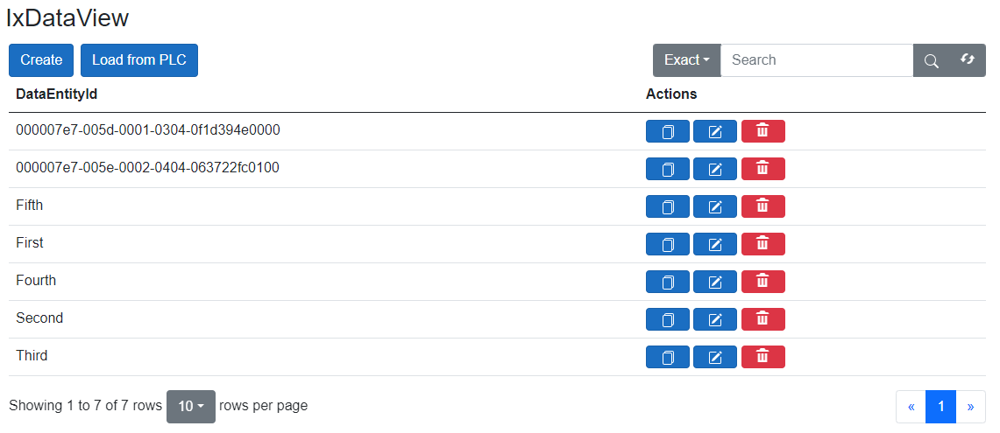

AXOpen.Data
AXOpen.Data provides data exchange between the controller and an arbitrary repository.
AXOpen.Data library provides a simple yet powerful data exchange between PLC and an arbitrary data repository. It includes the implementation of a series of repository operations known as CRUD (Create Read Update Delete), accessible directly from the PLC.
Benefits
The main benefit of this solution is data scalability; once the repository is set up, any modification of the data structure(s) will result in an automatic update of mapped objects. And therefore, there is no need for additional coding and configuration.
How it works
The basic PLC block is AxoDataExchange, which has its .NET counterpart (or .NET twin) that handles complex repository operations using a modified AxoRemoteTask, which is a form of RPC (Remote Procedure Call), that allows you to execute the code from the PLC in a remote .NET application.
Implemented repositories
The AxoDataExchange uses a predefined interface, IRepository, that allows for the virtually unlimited implementation of different target repositories.
At this point, AXOpen supports these repositories directly:
- InMemory
- Json
- MongoDB
- RavenDB
AxoDataExchange
Getting started
Data exchange manager
Data exchange object must be extended by AxoDataExchange.
It looks like the sample you are looking for does not exist.
Data exchange object
The data entity variable must be created. It contains data that we want to exchange between PLC and repository. This variable must be annotated with following attributes:
AxoDataEntityAttribute-- unique attribute for finding a correct instance of data exchange.#ix-generic:TOnline-- type information attribute.#ix-generic:TPlain as POCO-- type information attribute.
Note
The AxoDataExchange object must be unique. Annotations AxoDataEntityAttribute, #ix-generic:TOnline and #ix-generic:TPlain as POCO must be attributed to only one member AxoDataExchange object, which is used to locate data object that contains data to be exchanged between PLC and the target repository.
An exception is thrown when AxoDataEntityAttribute is missing or multiple members have the annotation.
Note
The 'Data' variable must be of a type that extends AxoDataEntity.
It looks like the sample you are looking for does not exist.
Data exchange initialization in PLC
As mentioned earlier, we use remote calls to execute the CRUD operations. These calls are a variant of AxoTask, which allows for invoking a C# code. We will now need to create an instance of AxoProcessDataManager in a context object (AxoContext) (or as a member of another class that derives from AxoObject). We will also need to call DataManager in the Main method of appropriate context.
It looks like the sample you are looking for does not exist.
Instantiate context in a configuration
CONFIGURATION MyConfiguration
VAR_GLOBAL
_myContext : Context;
END_VAR
END_CONFIGURATION
Execute the context in a program
PROGRAM MAIN
VAR_EXTERNAL
_myContext : Context;
END_VAR
_myContext.Run();
Data exchange initialization in .NET
At this point, we have everything ready in the PLC.
We must now tell the DataManager what repository to use. As a example, data repository is set as JSON files.
Let's create a configuration for the repository and initialize remote data exchange:
var exampleRepositorySettings =
new AXOpen.Data.Json.JsonRepositorySettings<Pocos.AxoDataExamplesDocu.AxoProductionData>(
Path.Combine(Environment.CurrentDirectory, "exampledata"));
var exampleRepository =
Ix.Repository.Json.Repository.Factory(exampleRepositorySettings);
Entry.Plc.AxoDataExamplesDocu.DataManager.InitializeRemoteDataExchange(exampleRepository);
Note
MyData should be of type from Pocos.
Usage
Now we can freely shuffle the data between PLC and the local folder.
It looks like the sample you are looking for does not exist.
Tracking changes
Every change to the data is meticulously tracked and saved. These changes are recorded in two distinct locations:
- Directly in the Database - Each record maintains its own history of changes:
{
"ComesFrom": 1,
"GoesTo": 0,
"RecordId": null,
"Changes": [
{
"DateTime": "2020-10-10T10:10:10.00",
"UserName": "admin",
"ValueTag": {
"HumanReadable": "PneumaticManipulator.ProcessData.Shared.Set.ComesFrom",
"Symbol": "Context.PneumaticManipulator.ProcessData.Shared.Set.ComesFrom"
},
"OldValue": 0,
"NewValue": 1
}
],
"DataEntityId": "testRecord"
}
- In Logs - All operations involving records are meticulously logged:
[10:10:10 INF] Create testRecord in examples.PneumaticManipulator.ProcessDataManger by user action. { UserName = admin }
[10:10:10 INF] Value change Context.PneumaticManipulator.ProcessData.Shared.Set.ComesFrom of testRecord from 0 to 1 changed by user action. { UserName = admin }
Every action as creation, update, deletion, or copying data is captured in the logs. Also every record has its own set of changes.
Its important to note that modifications originating from the PLC are not logged, tracked, or saved.
Locking
When a client is in the process of editing, copying, or attempting to delete a record, the entire repository becomes locked. While the repository is locked, no one can make edits to records, until the repository is unlocked.
Important
The repository is locked by clicking on the edit, copy, or delete buttons, and it can be unlocked by clicking the save or close button. If the modal is closed in an incorrect manner, such as clicking outside of it, the repository will remain locked.
Hashing
Data are hashed each time they are created or updated.
To enable hash verification, you can add the attribute: {#ix-attr:[AXOpen.Data.AxoDataVerifyHashAttribute]} above the data manager. With this attribute in place, the hash will be checked whenever you interact with the data. In case the verification process fails, a log will be generated, and the user will be warned about external modifications to the record.
Data visualization
Automated rendering using RenderableContentControl
With Command presentation type, options exist for adding, editing, and deleting records.
<RenderableContentControl Context="Entry.Plc.AxoDataExamplesDocu.DataManager" Presentation="Command"></RenderableContentControl>

If you use Status presentation type, data will be only displayed and cannot be manipulated.
<RenderableContentControl Context="Entry.Plc.AxoDataExamplesDocu.DataManager" Presentation="Status"></RenderableContentControl>

Custom columns
There is a possibility to add custom columns if it is needed. You must add AXOpen.Data.ColumnData view as a child in DataView. The BindingValue must be set in ColumnData and contains a string representing the attribute name of custom columns. If you want to add a custom header name, you can set the name in HeaderName attribute. Also, there is an attribute to make the column not clickable, which is clickable by default. The example using all attributes:
<DataExchangeView Vm="_vm" Presentation="Command">
<ColumnData HeaderName="Some data" BindingValue="SomeData" Clickable="false" />
<ColumnData HeaderName="A number" BindingValue="SomeNumber" Clickable="false" />
<ColumnData HeaderName="Yes/No" BindingValue="SomeBool" Clickable="false" />
</DataExchangeView>
When adding data view manually, you will need to create ViewModel:
@code {
private DataExchangeViewModel _vm;
protected override void OnInitialized()
{
_vm = new DataExchangeViewModel { Model = Entry.Plc.AxoDataExamplesDocu.DataManager, AlertDialogService = _alertDialogService, AuthenticationProvider = _authenticationProvider };
}
}
Note
When creating ViewModel, don't forget to provide AlertDialogService and AuthenticationProvider.

Export/Import
If you want to be able to export data, you must add CanExport attribute with true value. Like this:
<DataExchangeView Vm="@ViewModel.DataViewModel" Presentation="Command" CanExport="true" />
With this option, buttons for export and import data will appear. After clicking on the export button, the .zip file will be created, which contains all existing records. If you want to import data, you must upload .zip file with an equal data structure as we get in the export file.

Custom export
You have the option to customize the exported files according to your preferences. This includes selecting specific columns and rows, choosing the desired file type, and specifying the separator. It's important to note that if you don't select all columns for export, importing the files may not be done correctly.
During the importing process, it is crucial to enter the same separator that was used during the export. If the default separator was used during the export, there is no need to make any changes.
You also can create own exporter. To do this, you must create a class that implements IDataExporter<TPlain, TOnline> interface. This interface requires you to implement the Export, Import and GetName method. Once you've done this, your custom exporter will be displayed in the custom export and import modal view. Users will be able to choose the exported file type through this view.
For a better user experience, it is strongly recommended to clean the Temp directory when starting the application. The best way to do this is to add the following lines to the "Program.cs" file:
// Clean Temp directory
IAxoDataExchange.CleanUp();
Important
Export and import functions creates high load on the application. Don't use them with large datasets. These function can be used only on a limited number (100 or less) documents. Typical usage would be for recipes and settings, but not for large collections of production or event data.
Modal detail view
The Detail View of a record is shown like modal. That means if you click on some record, the modal window with a detail view will be shown. If necessary, this option can be changed with ModalDetailView attribute. This change will show a detail view under the record table. Example with ModalDetailView attribute:
<DataExchangeView Vm="@ViewModel.DataViewModel" Presentation="Command" ModalDetailView="false" />

AxoDataFragmentExchange
Fragment data exchange allows to group of multiple data managers into a single object and perform repository operations jointly on all nested repositories.
Data fragment exchange manager
We must create a class extending the AxoDataFragmentExchange for the data fragment exchange to work.
It looks like the sample you are looking for does not exist.
Nesting AxoDataExchanger(s)
AxoDataFragmenExchange can group several data managers where each can point to a different repository. Nested data managers must be set up as explained here.
Note
Note that each data manager must be annotated with AXOpen.Data.AxoDataFragmentAttribute that will provide information to the parent manager that the member takes part in data operations.
Important
First data manager declared as a fragment is considered a master fragment. The overview and list of existing data are retrieved only from the master fragment.
Initialization and handling in the controller
We will now need to create an instance of AxoDataFragmentExchange in a context object (AxoContext) (or as a member of another class that derives from AxoObject). We will also need to call AxoDataFragmentExchangeContext in the Main method of appropriate context.
It looks like the sample you are looking for does not exist.
Instantiate context in a configuration
CONFIGURATION MyConfiguration
VAR_GLOBAL
_myContext : AxoDataFragmentExchangeContext;
END_VAR
END_CONFIGURATION
Execute the context in a program.
PROGRAM MAIN
VAR_EXTERNAL
_myContext : AxoDataFragmentExchangeContext;
END_VAR
_myContext.Run();
Data exchange initialization in .NET
At this point, we have everything ready in the PLC.
If the nested data exchange object does not have the repository set previously, we will need to tell the to fragment manager wich repositories we be used by in data exchange. We will work with data stored in files in JSON format.
var scatteredDataBuilder =
Entry.Plc.AxoDataFragmentExchangeContext.ProcessData.CreateBuilder<AxoDataFramentsExchangeDocuExample.ProcessDataManager>();
// Setting up repositories
scatteredDataBuilder.SharedHeader.SetRepository(new JsonRepository<Pocos.AxoDataFramentsExchangeDocuExample.SharedDataHeaderData>(
new AXOpen.Data.Json.JsonRepositorySettings<Pocos.AxoDataFramentsExchangeDocuExample.SharedDataHeaderData>(Path.Combine(Environment.CurrentDirectory, "bin", "data-framents-docu", "set"))));
scatteredDataBuilder.Station_1.SetRepository(
new JsonRepository<Pocos.AxoDataFramentsExchangeDocuExample.Station_1_Data>(
new AXOpen.Data.Json.JsonRepositorySettings<Pocos.AxoDataFramentsExchangeDocuExample.Station_1_Data>(Path.Combine(Environment.CurrentDirectory, "bin", "data-framents", "fm"))));
Note
MyData should be of type from Pocos.
Usage
Now we can freely shuffle the data between PLC and the local folder.
It looks like the sample you are looking for does not exist.
Tracking changes
Every change to the data is meticulously tracked and saved. These changes are recorded in two distinct locations:
- Directly in the Database - Each record maintains its own history of changes:
{
"ComesFrom": 1,
"GoesTo": 0,
"RecordId": null,
"Changes": [
{
"DateTime": "2020-10-10T10:10:10.00",
"UserName": "admin",
"ValueTag": {
"HumanReadable": "PneumaticManipulator.ProcessData.Shared.Set.ComesFrom",
"Symbol": "Context.PneumaticManipulator.ProcessData.Shared.Set.ComesFrom"
},
"OldValue": 0,
"NewValue": 1
}
],
"DataEntityId": "testRecord"
}
- In Logs - All operations involving records are meticulously logged:
[10:10:10 INF] Create testRecord in examples.PneumaticManipulator.ProcessDataManger by user action. { UserName = admin }
[10:10:10 INF] Value change Context.PneumaticManipulator.ProcessData.Shared.Set.ComesFrom of testRecord from 0 to 1 changed by user action. { UserName = admin }
Every action as creation, update, deletion, or copying data is captured in the logs. Also every record has its own set of changes.
Its important to note that modifications originating from the PLC are not logged, tracked, or saved.
Locking
When a client is in the process of editing, copying, or attempting to delete a record, the entire repository becomes locked. While the repository is locked, no one can make edits to records, until the repository is unlocked.
Important
The repository is locked by clicking on the edit, copy, or delete buttons, and it can be unlocked by clicking the save or close button. If the modal is closed in an incorrect manner, such as clicking outside of it, the repository will remain locked.
Hashing
Data are hashed each time they are created or updated.
To enable hash verification, you can add the attribute: {#ix-attr:[AXOpen.Data.AxoDataVerifyHashAttribute]} above the data manager. With this attribute in place, the hash will be checked whenever you interact with the data. In case the verification process fails, a log will be generated, and the user will be warned about external modifications to the record.
Data visualization
Automated rendering using RenderableContentControl
With Command presentation type, options exist for adding, editing, and deleting records.
<RenderableContentControl Context="Entry.Plc.AxoDataFragmentExchangeContext.ProcessData" Presentation="Command"></RenderableContentControl>
If you use Status presentation type, data will be only displayed and cannot be manipulated.
<RenderableContentControl Context="Entry.Plc.AxoDataFragmentExchangeContext.ProcessData" Presentation="Status"></RenderableContentControl>
Custom columns
There is a possibility to add custom columns if it is needed. You must add AXOpen.Data.ColumnData view as a child in DataView. The BindingValue must be set in ColumnData and contains a string representing the attribute name of custom columns. If you want to add a custom header name, you can set the name in HeaderName attribute. Also, there is an attribute to make the column not clickable, which is clickable by default. The example using all attributes:
<DataExchangeView Vm="_vm" Presentation="Command">
<ColumnData HeaderName="Some data" BindingValue="SomeData" Clickable="false" />
<ColumnData HeaderName="A number" BindingValue="SomeNumber" Clickable="false" />
<ColumnData HeaderName="Yes/No" BindingValue="SomeBool" Clickable="false" />
</DataExchangeView>
When adding data view manually, you will need to create ViewModel:
@code {
private DataExchangeViewModel _vm;
protected override void OnInitialized()
{
_vm = new DataExchangeViewModel { Model = Entry.Plc.AxoDataFragmentExchangeContext.ProcessData, AlertDialogService = _alertDialogService, AuthenticationProvider = _authenticationProvider };
}
}
Note
When creating ViewModel, don't forget to provide AlertDialogService and AuthenticationProvider.
Note
Custom columns can only added from master fragment (first declared repository).
Export/Import
If you want to be able to export data, you must add CanExport attribute with true value. Like this:
<DataExchangeView Vm="@ViewModel.DataViewModel" Presentation="Command" CanExport="true" />
With this option, buttons for export and import data will appear. After clicking on the export button, the .zip file will be created, which contains all existing records. If you want to import data, you must upload .zip file with an equal data structure as we get in the export file.
Custom export
You have the option to customize the exported files according to your preferences. This includes selecting specific columns and rows, choosing the desired file type, and specifying the separator. It's important to note that if you don't select all columns for export, importing the files may not be done correctly.
During the importing process, it is crucial to enter the same separator that was used during the export. If the default separator was used during the export, there is no need to make any changes.
You also can create own exporter. To do this, you must create a class that implements IDataExporter<TPlain, TOnline> interface. This interface requires you to implement the Export, Import and GetName method. Once you've done this, your custom exporter will be displayed in the custom export and import modal view. Users will be able to choose the exported file type through this view.
For a better user experience, it is strongly recommended to clean the Temp directory when starting the application. The best way to do this is to add the following lines to the "Program.cs" file:
// Clean Temp directory
IAxoDataExchange.CleanUp();
Important
Export and import function will create high load on the application. Don't use with large datasets. These function can be used only on a limited number (100 or less) documents. Typical used would be for recipes and settings, but not for large collections of production or event data.
Modal detail view
The Detail View is default shown like modal view. That means if you click on some record, the modal window with a detail view will be shown. If necessary, this option can be changed with ModalDetailView attribute. This change will show a detail view under the record table. Example with ModalDetailView attribute:
<DataExchangeView Vm="@ViewModel.DataViewModel" Presentation="Command" ModalDetailView="false" />